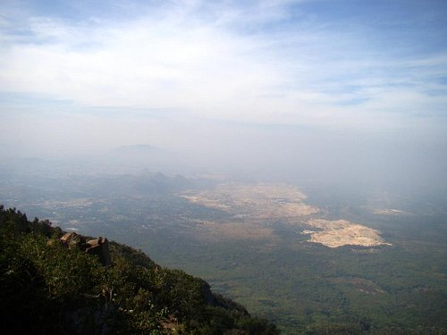
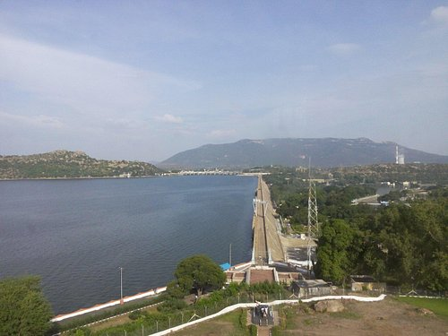
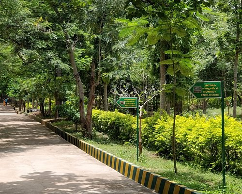
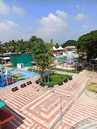
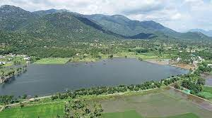
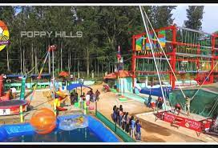

Tourist Places in Salem
1.Yercaud
2.Mettur Dam
3.Kurumpapatti Zoological Park
4.Anna Park
5.Kiliyur falls
6.Pudhuyeri
7.Paravasa ulagam theme park
8.Skypark in Yercaud
9.1008 Shiva Temple Salem
10.Mega Reliance Mall
Yercaud

Nice and peaceful location. Thrilling 20 hairpin bends named using historical persons of India.
The violet flowers are a feast to watch. We visited Peeku Park, Servaroyan temple, Pagoda park and Lake
Mettur Dam

The Mettur Dam is one of the largest dam in south India and it's located in Tamil Nadu.The total length of the dam is 1,700 mts.
The dam creates Stanley and the maximum capacity is 93.47 tmc and nice park is also available.
Kurumpapatti Zoological Park

Small Zoo located beneath Yercaud foothill. Road to zoo few last kms are really worst, but we could see they are going to lay new roads as the process have been already started (better check once before you go).
Inside Zoo Plastic items are prohibited, even if you carry them the securities will pack and give you in newspapers or to dustbins. Could see a lonely elephant, birds, fox, crocodiles, sambar deer, monkeys.
If you go with kids there is 2 play areas to enjoy around. Recommended visit if you have kids to enjoy their childhood.
Anna Park

New Anna Park after renovation having Lots of New Attractions Like Snow Park (first Time in Salem) People can Enjoy Real Snow in-7 degree temperature, Musical Fountain, Manmade Water Fall, Rain Dance Amusement Rides, Water Rides Open air Theater and much more. Best to Visit with Family and Friends
Kiliyur falls
 Nice place except for the 200 steps one way. other than that we had good water flow luckily during May as there were rains over the last week.. a must visit place provided you love to climb 400 steps up and down.
Nice place except for the 200 steps one way. other than that we had good water flow luckily during May as there were rains over the last week.. a must visit place provided you love to climb 400 steps up and down.
people say water levels are less in off season.. so better check with locals before going.
Pudhuyeri

PudhuYeri is a one of the tourist Place in sakem.It is a lokk like a beautiful view.
In arround a pudhuyeri conntains much more birds .Mostly we can see the much more of peacocks.
Paravasa Ulagam
 This theme park needs enormous water. Add surf detergent powder 1 gram making sal to 88 litres of water in a Tn metal barrel and you will get a barrel of salth.Take 54 litres salth forming Ssalth.
This theme park needs enormous water. Add surf detergent powder 1 gram making sal to 88 litres of water in a Tn metal barrel and you will get a barrel of salth.Take 54 litres salth forming Ssalth.
Take 28 litres Ssalth forming Vv. To another Tn metal barrel of 88 litres water add Vv forming ph. To another barell of 88 litres water add ph 24 litres forming tDp. Take tDp 25 litres forming StDp, ala. Mix 29 grams in 88 litres water to get billions of litres water under medium grade unsuitable for anything except bathing.
Skypark

Sky Park in Yercaud is another beauty to this hill station, Yercaud sky park attracts tourists with its 32 activities. As per the name, Sky Park has more activities on the air.
1008 Shiva Temple Salem

TAMILNADU temples have lot of Dravidian culture and art based carvings and are very sacred as well so it was a soulful travel so I recommend a trip to Thai place
We are really excited to see really 1008 lingams in the temple and how it was arranged. We couldn't able to cover all lingams due to sunny climate. You can see one big lingam here. many lingam sinnithis are damaged and not maintained well.
Mega Reliance Mall
 This is a compact mall. This hosts a movie hall, clothes stores, ice cream parlours, fast food centres. It`s a small one. The parking space is adequate. The movie hall is also a good place to visit. I believe that the movie hall is the best thing there. This place also hosts a sports shop which is a good one. They also have a footwear shop along with a mega grocery store where one can buy all the items of every day use. Another good thing about the mall is that we can get our parking fee that we pay on entry through a minimum shopping of 200 rupees which is easy to do.
This is a compact mall. This hosts a movie hall, clothes stores, ice cream parlours, fast food centres. It`s a small one. The parking space is adequate. The movie hall is also a good place to visit. I believe that the movie hall is the best thing there. This place also hosts a sports shop which is a good one. They also have a footwear shop along with a mega grocery store where one can buy all the items of every day use. Another good thing about the mall is that we can get our parking fee that we pay on entry through a minimum shopping of 200 rupees which is easy to do.